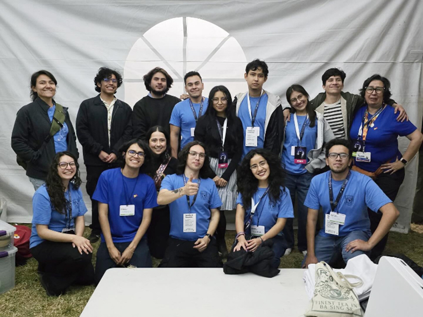
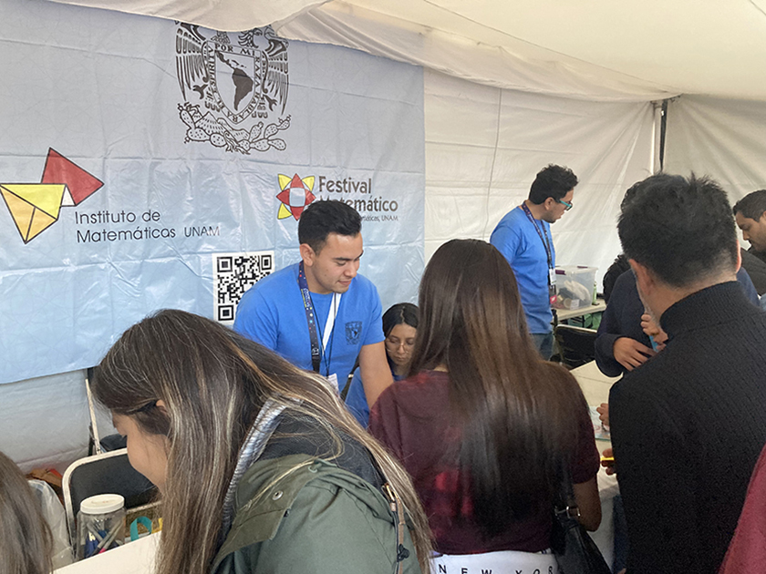
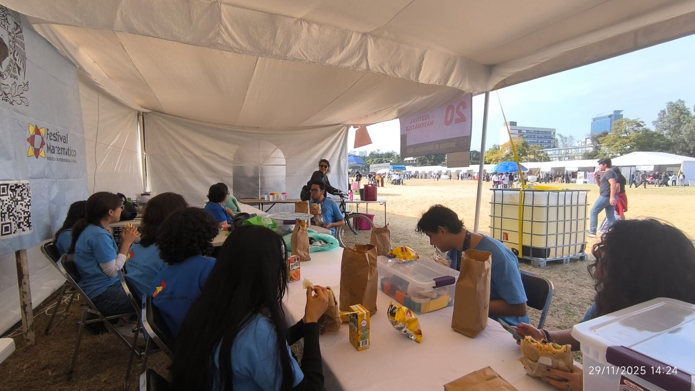
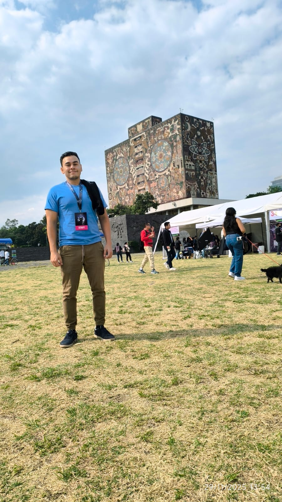
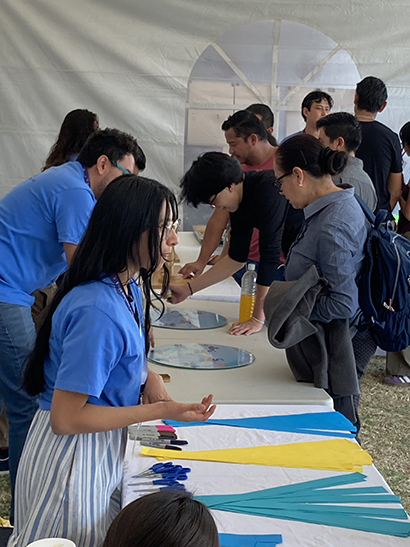
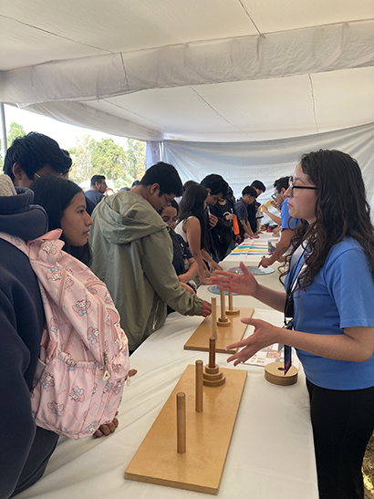
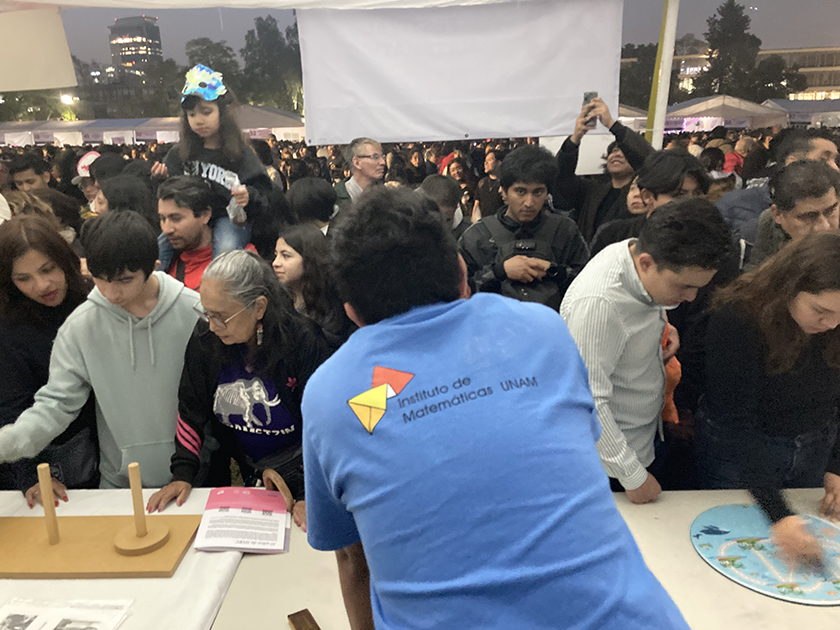
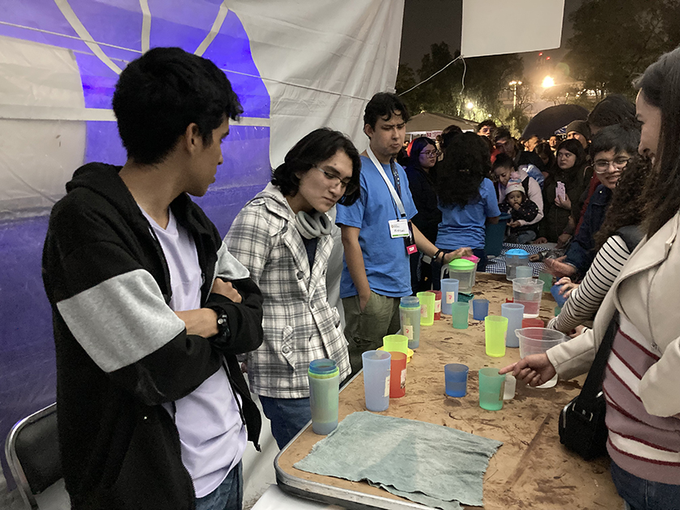
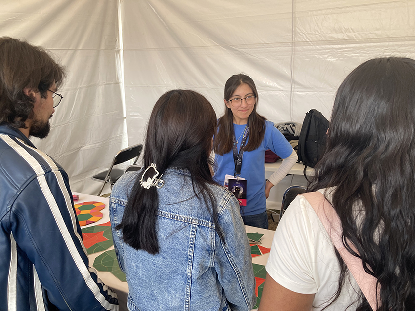

Noche de las Estrellas is the largest scientific outreach event in Ibero-America. Since its inception in 2009, it has transformed public spaces into open-air observatories where the sky becomes a vast classroom. The event invites families, students, and the general public to discover the secrets of the universe through telescopes, workshops, and cultural activities.
In this context, the Festival Matemático participates by demonstrating that mathematics is the language of the universe. I contributed to this massive celebration by facilitating playful and rigor-based activities that allow attendees to explore mathematical concepts under the stars. Our goal is to complement the astronomical observation with a terrestrial experience that fosters critical thinking and scientific curiosity among thousands of visitors.








